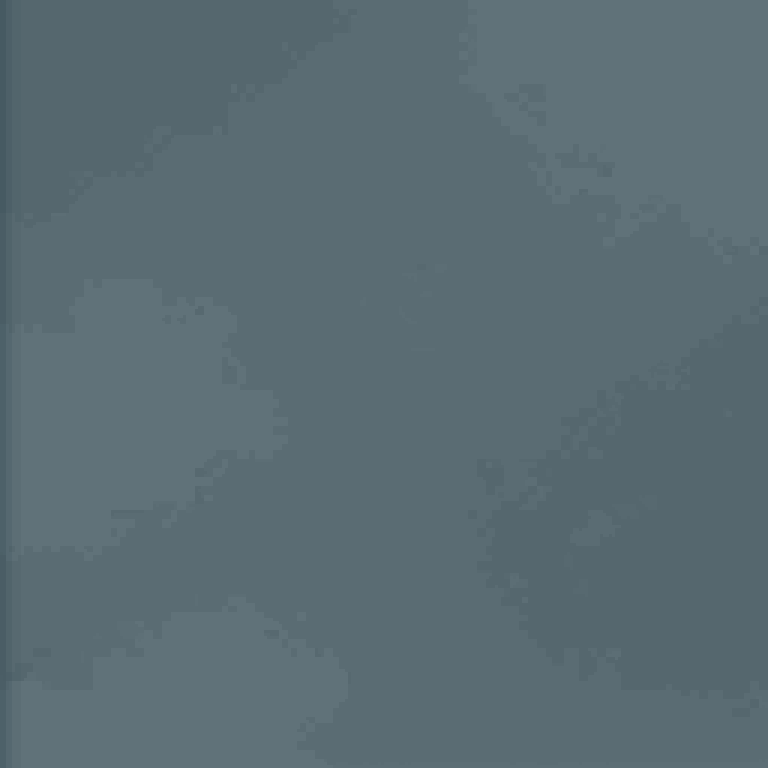

Room 1 / 局部结构像素 r2 · 待审
按 Pixel Canals 的实际观察组织结构明暗与材质像素层。仅替换左墙3.2m及相邻3.2×3.2m地坪，模型、布局、游戏镜头及r4照明保持。
来源与限制独立Godot场景墙面Aseprite地面Aseprite上轮整室候选
本页所有3D图均为实际Godot截图，未调曝光或后期增强。技术近景用于检查表面，不是新游戏镜头；Base Color只用于隔离贴图贡献。新图的间接反射未重烘焙，当前仍是局部美术候选。
原生像素图 · 最近邻3倍显示
 墙面256×272：暖灰主面、连续灯槽与下沿金属保护带；没有新增竖向面板缝
墙面256×272：暖灰主面、连续灯槽与下沿金属保护带；没有新增竖向面板缝
地坪256×256：统一蓝灰、硬边材料簇；仅实际墙边有轻微接触收口全室回归检查 · 13机位
局部以外继续使用r4原材质；技术检查真正显示前墙，两个总览覆盖20舱。截图不代表用户美术认可。